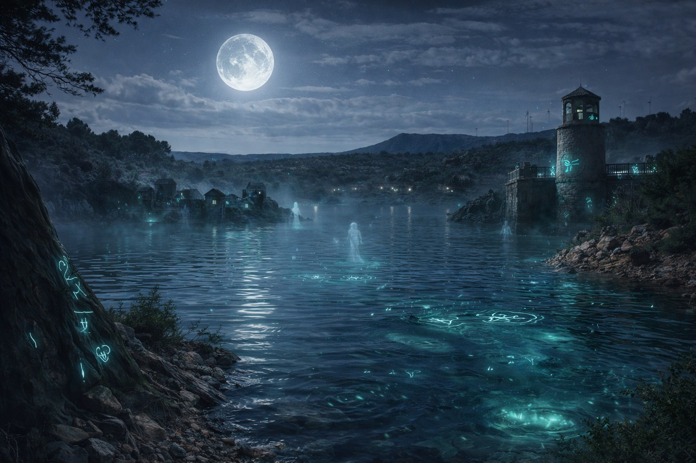

Cuando un antiguo poblado quedó sumergido tras una tormenta inexplicable, el pantano de Almansa se convirtió en un lugar lleno de misterios. Com miembros de una hermandad secreta, deberéis adentraros en la zona prohibida para investigar fenómenos sobrenaturales y descubrir el destino de un espíritu ancestral atrapado bajo las aguas. Resolveréis enigmas ligados a los elementos naturales y tomaréis decisiones que marcarán vuestro final. El pantano os observa… ¿romperéis la maldición o quedaréis atrapados en su susurro eterno?
- Temática: Misterio y fantasía
- Duración estimada: 30 minutos
- Dificultad: Media
- Jugadores: 3-6 personas
